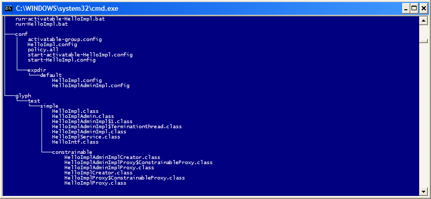

package glyph.test.simple;
import java.rmi.Remote;
import java.rmi.RemoteException;
import org.jini.glyph.Exportable;
import org.jini.glyph.Service;
import org.jini.glyph.chalice.DefaultExporterManager;
import net.jini.id.Uuid;
import net.jini.id.UuidFactory;
public class HelloImpl implements HelloIntf {
private Object adminObject;
private Uuid adminID;
private Object remoteAdmin;
public HelloImpl(String[] args) {
}
public Object getAdmin() throws RemoteException {
adminID = UuidFactory.generate();
if (remoteAdmin == null)
remoteAdmin = DefaultExporterManager.getManager().exportProxy((Remote) adminObject, adminObject.getClass().getName(), adminID);
return remoteAdmin;
}
public void setAdmin(Object admin) {
System.out.println("Set admin to: " + admin.getClass().getName());
this.adminObject = admin;
}
public String sayHello(String name) throws RemoteException {
System.out.println("Excuting sayHello method with parameter: " + name);
return "Hello, " + name + "!";
}
}
To allow the full service to be created you must add the follwoing annotations to the class defnition
@Service
@Exportable(parentInterfaces = "net.jini.admin.Administrable")
public class HelloImpl implements HelloIntf {
What happens when you run apt against this class is broken down into two sections
When the service annotation is detected the following things are written:
Running apt on this will create the following output tree:
